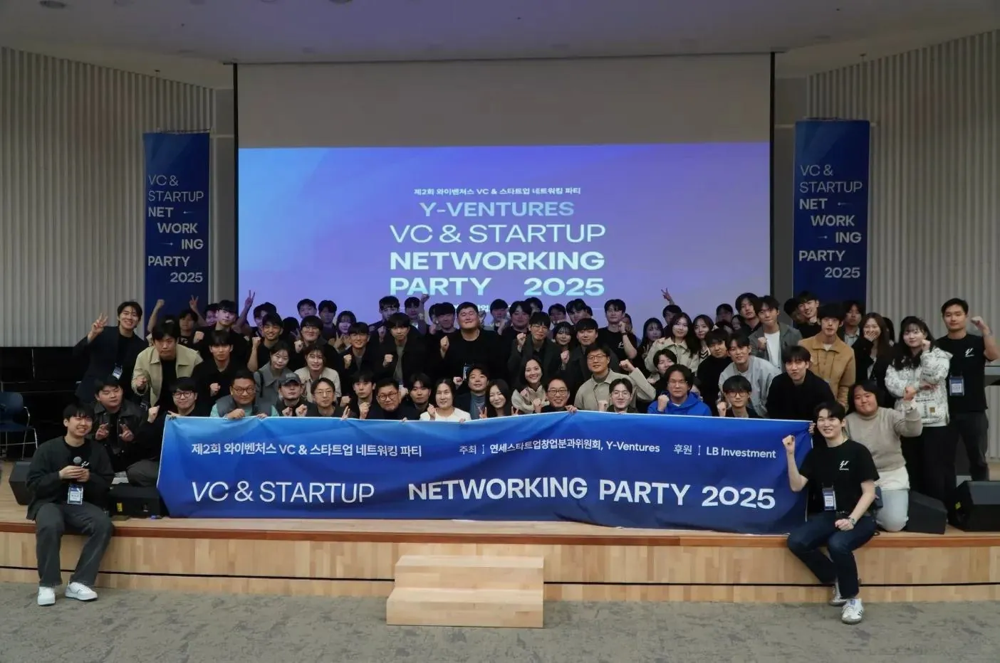
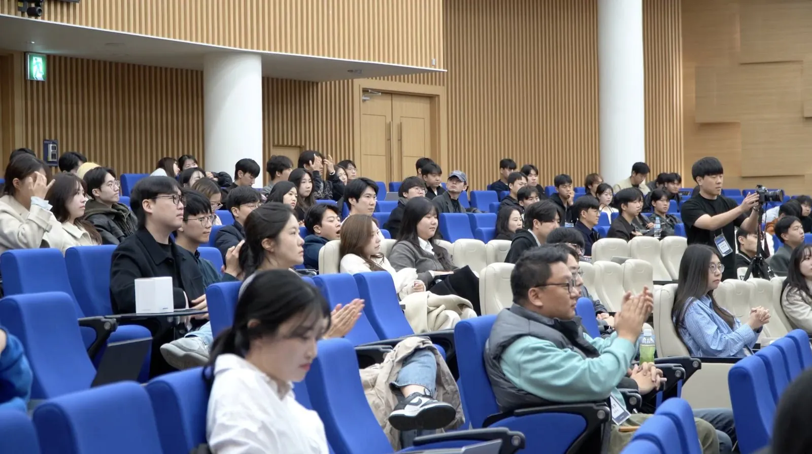
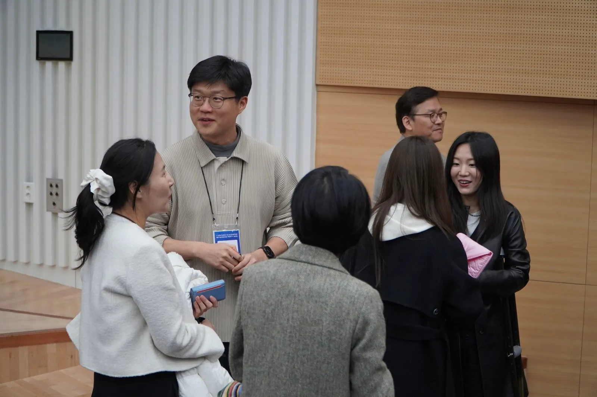

새로운 도전을 앞두고 있다면
무엇부터 시작해야 할지, 이 아이디어가 될지 막막할 때
먼저 그 길을 걸은 선배에게 첫걸음과 판단 기준을 직접 듣습니다.
도전을 앞둔 사람과 도전 중인 사람이, 먼저 그 길을 걸은 연세 창업가·VC를 만나는 연례 네트워킹 행사입니다.
참가 신청 마감 11/11(수) 23:59Y-Ventures Year-End Networking Party는 혼자 풀기 어려운 창업의 고민을, 먼저 그 길을 지나온 연세 출신 창업가와 VC에게 직접 묻는 자리입니다. 그 대화가 투자 논의와 협업, 후속 미팅 같은 실질적인 연결로 이어지도록 Y-VENTURES가 판을 만듭니다.
무엇부터 시작해야 할지, 이 아이디어가 될지 막막할 때
먼저 그 길을 걸은 선배에게 첫걸음과 판단 기준을 직접 듣습니다.
고객, 투자, 팀처럼 지금 막힌 문제를 혼자 붙잡고 있을 때
같은 길을 지나온 창업가와 VC에게 지금의 과제를 묻고 답을 찾습니다.
섹터별 연사는 확정되는 대로 안내드립니다.
이 행사의 중심은 네 개 섹터로 나뉘어 진행되는 멘토-멘티 세션입니다.
강연을 듣는 데서 끝나지 않고, 각자 안고 온 고민을 그 자리에서 연사에게 직접 묻고 함께 답을 찾습니다.
섹터는 참가 신청서에서 고르지 않습니다. 11월 12일 (목) 참가가 확정된 분께 섹터별 연사를 공개하고, 가고 싶은 섹터를 고르는 투표 링크를 보내드립니다. 당일 투표하지 않으면 무작위로 배정됩니다.
11월 12일 (목) 섹터 투표 결과와 섹터별 인원을 고려해 한 곳에 배정합니다. 투표하지 않은 분은 무작위로 배정합니다.
섹터마다 연사 한 분이 자신이 지나온 과정과 그때의 판단을 짧게 공유합니다.
창업을 앞둔 사람은 첫걸음에 대한 고민을, 이미 도전 중인 사람은 지금 막힌 문제를 가져와 연사에게 직접 조언을 구합니다.
2025년 11월 22일 대우관에서 열린 제2회에는 창업가 30여 명과 VC 20여 명을 포함해 150명이 모였습니다. 사후 설문에서 참가자의 51.6%가 투자 논의와 협업, 후속 미팅 같은 실질적인 연결을 얻었다고 답했습니다.



새로운 도전을 앞둔 분도, 지금 도전 중인 분도 환영합니다. 지원서에 지금의 고민을 적어 보내주세요.